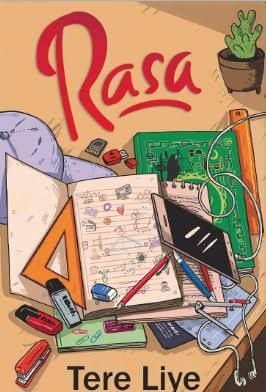
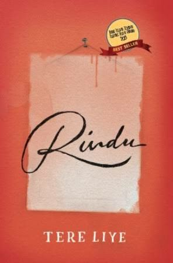
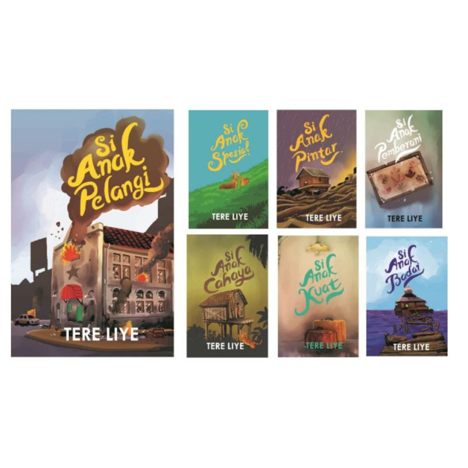

Rasa - Tere Liye
Novel "Rasa" karya Tere Liye mengisahkan tentang berbagai jenis rasa yang dialami tokoh utamanya, Lin, seorang siswi SMA. Cerita ini berpusat pada perjalanan Lin dalam menemukan jati diri, berdamai dengan masa lalu, dan menghadapi kompleksitas hubungan persahabatan, keluarga, serta cinta.
Saya kurang menikmati novel ini karena ceritanya terasa klise, terutama dengan tema percintaan segitiga dan konflik yang mudah ditebak.

Laut Bercerita - Leila S. Chudori
Novel "Laut Bercerita" karya Leila S. Chudori mengisahkan tentang tragedi penculikan aktivis mahasiswa pada tahun 1998 di Indonesia. Novel ini menyoroti kisah Biru Laut, seorang aktivis yang hilang, dan perjuangan keluarganya dalam mencari kebenaran serta menghadapi dampak kehilangan.
Menurut saya, Laut Bercerita adalah novel yang sangat mengena. Ceritanya emosional, penuh makna, dan membuka mata tentang sisi sejarah yang jarang dibahas. Gaya penulisannya juga kuat dan menyentuh.

Bumi Series - Tere Liye
Serial Bumi adalah seri novel fantasi karya Tere Liye yang menceritakan petualangan tiga remaja, Raib, Seli, dan Ali, yang memiliki kekuatan unik dan berasal dari klan yang berbeda di dunia paralel. Mereka harus menghadapi berbagai tantangan dan bahaya untuk menyelamatkan Bumi dari ancaman klan jahat.
Saya sangat menikmati Bumi Series. Ceritanya mengalir dengan baik, dunia fantasinya menarik tapi tetap mudah dipahami. Karakternya juga punya perkembangan yang jelas. Meski bergenre fantasi, tetap ada banyak hal yang terasa dekat dan bermakna.

Hujan - Tere Liye
Novel "Hujan" bercerita tentang Lail, seorang gadis kecil yang kehilangan keluarganya akibat bencana besar. Ia kemudian menjalani hidup penuh perjuangan, ditemani Esok, sahabat yang selalu ada untuknya. Kisah ini menggambarkan tentang kehilangan, persahabatan, pilihan hidup, dan keberanian untuk bangkit.
Buku ini bagus banget, alurnya mengalir, emosional, tapi tidak terlalu banyak romansa. Justru itu yang membuat ceritanya terasa tulus dan menyentuh. Salah satu karya terbaik Tere Liye.

Rindu - Tere Liye
Novel "Rindu" mengisahkan perjalanan panjang sebuah kapal dari Makassar menuju Tanah Suci. Di dalam kapal itu, banyak tokoh dengan latar belakang berbeda yang membawa cerita masing-masing tentang cinta, keluarga, perpisahan, serta pencarian jati diri.
Buku ini seru dan penuh pelajaran kehidupan. Selain kisah keluarga dan cinta, ada banyak renungan mendalam tentang hidup, perpisahan, dan pengorbanan. Sangat menginspirasi.

Seri Si Anak Mamak - Tere Liye
Seri novel "Si Anak Mamak" menceritakan kehidupan sederhana seorang anak desa bersama Mamaknya. Cerita-cerita ini menggambarkan masa kecil penuh makna, dengan berbagai tantangan, kebersamaan, dan kasih sayang keluarga.
Novel ini sangat bagus karena penuh nilai kehidupan. Banyak mengajarkan arti kekeluargaan, kesederhanaan, serta perjuangan dalam hidup. Sangat menyentuh dan inspiratif.